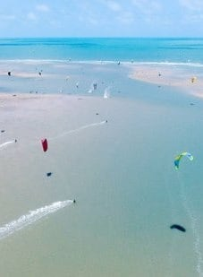
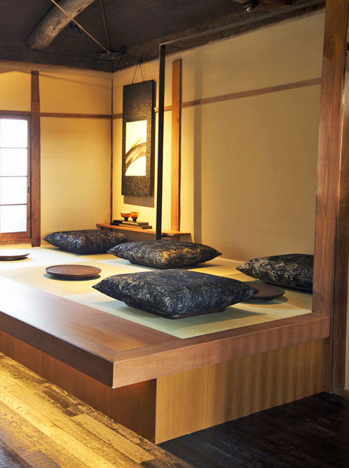
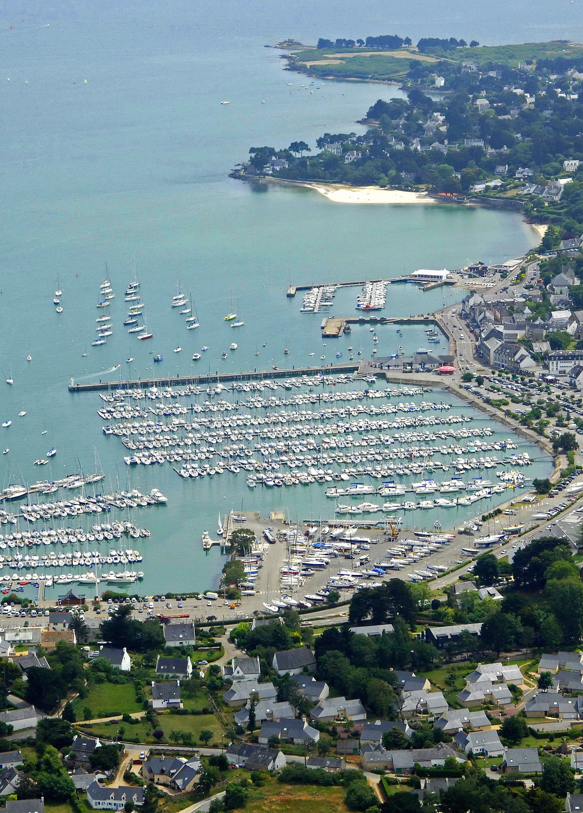

Héloïse Guillemot
Designer/Programmer
what's up buddies ?!
My favorite places
|  | Parajuru au BrasilLe Brésil, vaste pays d'Amérique du Sud, s'étend du bassin amazonien au nord à des vignobles et aux chutes d'Iguaçu au sud. |
|  | Kyoto au JapanAncienne capitale du Japon, Kyoto est une ville située sur l'île de Honshū. Elle est réputée pour ses nombreux temples bouddhistes classiques, ainsi que ses jardins, ses palais impériaux, ses sanctuaires shinto et ses maisons en bois traditionnelles. |
|  | La Trinité-sur-MerLa Trinité-sur-Mer est une commune française, créée en 1864, située dans le département du Morbihan en région Bretagne. La Trinité-sur-Mer est connue pour son port et pour ses compétitions nautiques. |